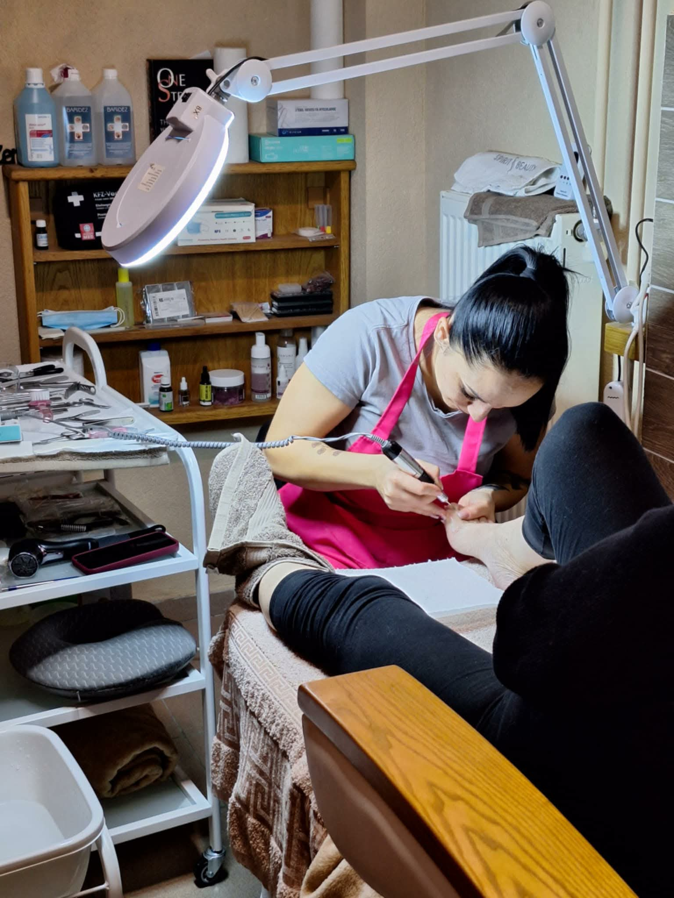

Gondoskodás a lábaknak
Esztétikai és Gyógypedikűr

Könnyed léptek minden nap
Profi Lábápolás
Lábaink viselik a mindennapi terhelést, mégis sokszor ezek kapják a legkevesebb figyelmet. Stúdiónkban a pedikűr nem csupán esztétikai kérdés: a láb egészségének megőrzésére és a problémák szakszerű kezelésére fókuszálunk.
Miben segíthetünk?
- Bőrkeményedések és tyúkszem eltávolítása
- Benőtt köröm szakszerű kezelése
- Sarokrepedések ápolása mélyhidratálással
- Frissítő lábmasszázs és kényeztető áztatás
Minden eszközt orvosi szinten sterilizálunk, biztosítva a maximális biztonságot és higiéniát vendégeink számára.